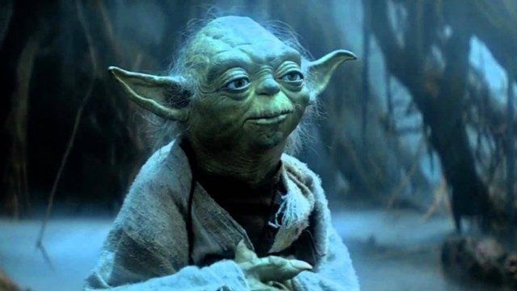

Brithe Side
1.Yoda
Yoda jest bez wątpienia najsilniejszym Jedi, jaki kiedykolwiek żył. Jest nieporównywalnie mądry w porównaniu z resztą Rady Jedi. Co więcej, jego szermierka nie ma sobie równych, nawet w wieku 900 lat. Jest także jednym z nielicznych, którzy opanowali umiejętność sięgania poza grób i dołączenia do żywej Mocy jako duch. Poza tym każdy Jedi, któremu udaje się przeżyć ponad dziewięć wieków, musi robić coś dobrze.
Przeczytaj nasz artykuł na temat 10 najpotężniejszych lordów Sithów także!

2.Luke Skywalker
Wstąpienie Luke'a na drogi Jedi nastąpiło znacznie później niż większość padawanów,
rozpoczynając szkolenie jako dorosły.
Nawet wtedy był niezwykle biegły w swoich umiejętnościach i przodował w sposobach działania Mocy.
W ciągu zaledwie kilku krótkich lat stał się na tyle biegły, aby samemu pokonać Dartha Vadera.
Niewiele wiemy o tym, co robił pomiędzy Powrót Jedi i Przebudzenie mocy,
ale wszystko wskazuje na to, że stał się potężnym dzierżącym Moc,
któremu dorównuje kilku innych.
3. Qui-Gon Jinn
Qui-Gon Jinn był niezwykle silnym Jedi i byłby członkiem Rady Jedi, gdyby nie upadł przed Darthem Maulem.
Jego jedynym problemem jest to, że odzwierciedlał wiele buntowniczych tendencji swojego mistrza, hrabiego Dooku, i nigdy w pełni nie wkupił się do Zakonu Jedi.
Spędził całe życie na studiowaniu przejawów świadomości po śmierci.
Był w stanie nauczyć się wystarczająco dużo, aby nauczyć zarówno Obi-Wana, jak i Yodę swoich mocy poprzez swojego ducha w zaświatach.
4. Król
Podczas gdy większość będzie pytać, dlaczego umieściliśmy Rey tak wysoko na liście, niektórzy będą dokładnie wiedzieć, dlaczego.
Jest niezwykle zestrojona z Mocą i bardzo szybko nauczyła się jej mocy.
Była w stanie użyć sztuczki umysłu Jedi, aby uciec swoim porywaczom w bazie Starkiller bez jakiegokolwiek formalnego szkolenia.
Ostatni raz, kiedy ktokolwiek widział tyle surowej mocy, był myśl, że znaleźli Wybraniec .
5. Mace Windu
Mace Windu | Lucasfilm
Mace Windu zalicza się do najbardziej utalentowanych szermierzy w całym Zakonie Jedi (jeśli nie the większość).
Jego mądrość jest również prawie niezrównana.
W końcu to on i Yoda widzieli niebezpieczeństwa związane z treningiem młodego Anakina Skywalkera.
Pokonał także Palpatine'a w walce jeden na jednego, bliski zabicia przyszłego cesarza, zanim Anakin zainterweniował.
Al Horford I Amelia Vega Kochanie